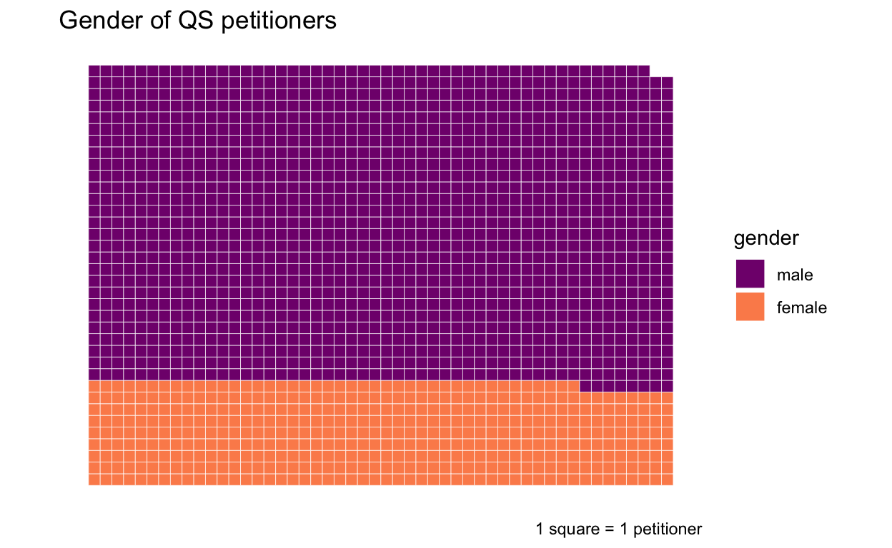
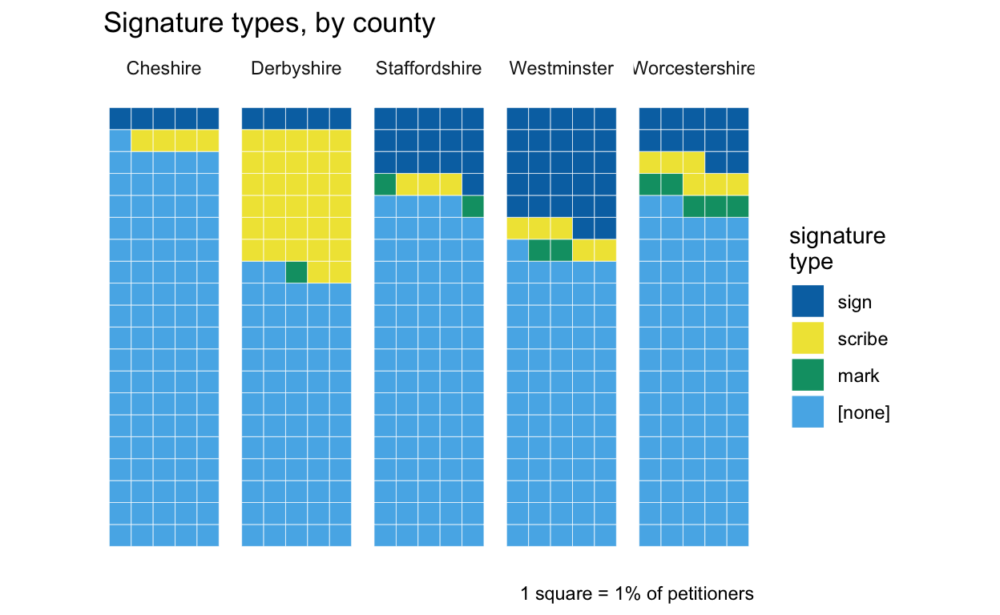
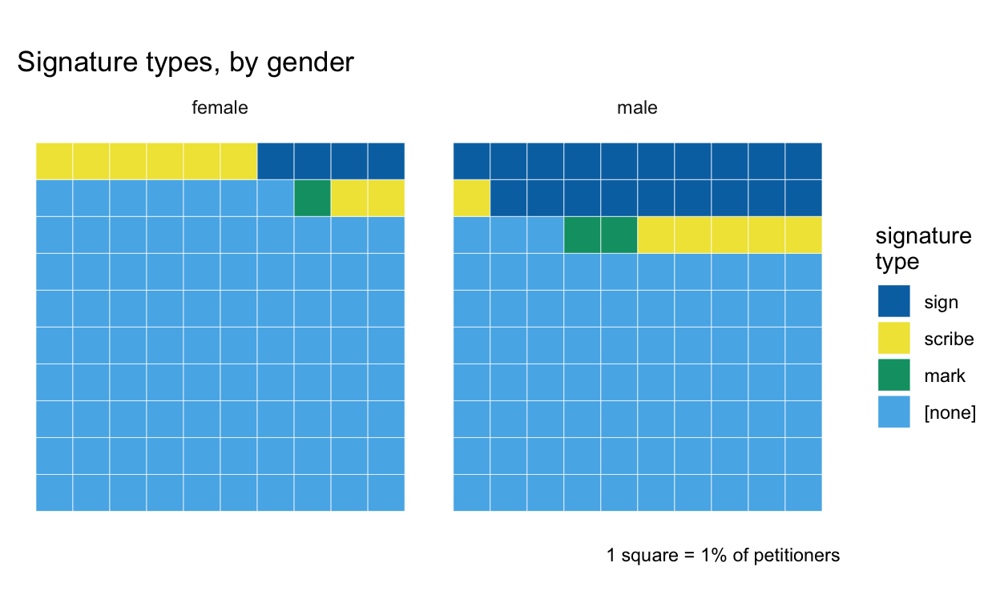

Quarter Sessions petitioners
Im using data from TPOPs transcribed QS collections (Cheshire, Derbyshire, Staffordshire, Westminster and Worcestershire), as well as additional data Ive collected for a larger sample of untranscribed Cheshire files, and slightly less detailed data for Hertfordshire, for a total of 2141 petitions.
What is a petitioner? These petitions have two types of participant. Most QS petitions have one or more named petitioners at the head of the petition (often, The humble petition of X), including in some cases people on whose behalf the petition was made. Meanwhile, subscribers are those who signed their names in support of the petition, either in the space below the main text or on an attached document. In some petition archives, collective petitions, which have only subscribers (and might have thousands of them) are the most familiar type of petition; this is rather less common in QS records, and its quite common for QS collective petitions not to have any named subscribers either. [Other names which may appear on petitions are not considered here: signatures of clerks, lawyers, judges or other officials; and mentions of individulas, especially the subjects of petitioners complaints, in the body of a petition.]
Using these definitions, I have some information about individuals for 2229 named petitioners and 3531 subscribers (for Herts, I only have subscriber counts). Potentially meaningful information which is available for at least some petitioners and subscribers:
- nearly all have gender information, on the basis of first names (>99% of petitioners and ~95% of subscribers)
- for transcribed petitions, signature types (name, initials, marks) of signed names
- occupation/social status and locations for some names (but both of these would need more work to make them usable than is possible here)
It should be noted that the Derbyshire collection is only a partial set of surviving petitions in the Derbyshire QS records which are, moreover, a bit different from the other counties archives (in that they did not survive in the usual sessional organisation). Many petitions were excluded because they couldnt be dated and there were very uneven clusters among those that could). Ive kept them in the analysis for now, but theyre often very anomalous and Im increasingly doubtful that anything can be read into the differences.
Making petitioners count
By far most petitions were initiated by a single person (1430 petitions, about 67%). For the other 33%, the most noticeable feature is that petitions by groups of named petitioners are less common than those from collectives (with or without named subscribers): there were 473 collective petitions (including 88 on behalf of a named person(s)), compared to 238 petitions with multiple named petitioners (including 32 on behalf of someone).
Moreover, the vast majority of named group petitions are by very small groups. 168 have just two petitioners, only 23 have more than five and just three petitions have more than ten. It seems likely to me that group petitions are often the work of close relatives or working colleagues. At least 70 group petitions include people who are married couples, stated to be relatives (especially siblings) or share surnames. There are further group petitions from constables, other local officials or business partners, directly concerned with shared responsibilities or work.
This shows subscribers only, for petitions that have them, and excluding a tiny handful of petitioners with more than 50 subscribers. Once again, 1 is the most frequent number of subscribers, but there is a much longer tail. Subscribers average 9.75 per petition, cf.1.27 petitioners. However, more than a third of collective petitions had no signatures at all (168); obtaining signatures was clearly not essential to support collective petitioning

counties
The proportions of solo / collective / group petitions can vary geographically.
The percentage of group petitions appears to be relatively consistent across the counties (except for Derbyshire); the main variation here is between single and collective, hinting at regional variations in petitioning cultures.

topics
Because of the larger number of topics, its more effective to focus on the proportion of petitions by solo petitioners rather than the full breakdown. (This time, the size of squares is used to indicate the number of petitions in the group.)
Petitions complaining about local rates and taxes clearly tend to be group/collective affairs, or at least presented as such (communities organising together to complain about unfair rate assessments compared to other towns or villages more often than individual complaints of unfairness compared to neighbours). Dissenters petitions, though a small category, are specifically applications to license places of worship and brought by local communities rather than single individuals. On the other hand, more predominantly solo efforts include petitions about military relief, poor relief and child support.

change over time
There may be a long-term shift towards solo petitioning, though its far from conclusive. For much of the 17th century the percentage of solo petitioners is relatively consistent; fluctuations become more noticeable after petition numbers fall from the late 17th century onwards. However, the overall 18th-century solo average (73%) is higher than that for the 17th century (66%), and the late-16th-century solo average is even lower at 52%.

Gender
The majority of petitioners are men; only about 23% of named petitioners are female.

But the gender disparity is much greater for subscribers, of whom only about 2% are women.
Women are also more likely than men to be solo petitioners.
Moreover, there are no all-female petitioner groups larger than two people (women also tend to be very much in the minority in larger mixed groups). So its clear that men were far more involved with petitioning as an organised collective or group activity. The absence of women as subscribers may imply that supporters were most often recruited on a household basis, with men signing as heads of households.
Its not very surprising that female participation also varies with petition topic (and this at least to some extent correlates with topics that were more or less likely to be solo vs group/collective); in particular very few women are involved in petitions about rates, while approaching half of petitioners for poor relief.
Signing petitions
There was no requirement to sign a petition and the majority of petitioners did not sign their petitions at all. Therefore, this is not an attempt to analyse signatures for evidence of literacy. But why did some petitioners sign their names if the majority didnt bother? What, if anything, is the social/cultural/legal significance of a signature in a petition? It might not be the same as in witness examinations or other legal documents (for which signatures usually were required). So Im curious as to whether there are any patterns of interest.
I dont have any signatures data for Herts and I only have partial data for the untranscribed Cheshire petitions, so theyre excluded from this section. Overall, theres some kind of signature data for 24% of petitioners in the transcribed collections.
In transcriptions, signatures were also marked up for type of signature:
- mark
- initial(s)
- autograph signature
- name written in the same hand as the main petition text
The last of these can be difficult to interpret. In most cases, its not because the petition was written by the petitioner; inspection of the Cheshire images indicates that the only instances of this were less formal petitionary letters. In some cases - certainly for subscribers - it looks possible that the petition is a copy rather than the original document. For petitioners its hard to be sure whether its a copy of an original autograph or a scribal decision to write out the name as a kind of pseudo-signature and so Ill only include them in breakdowns by signature type.
Initials are very rare (<10, only 1 of which is for a petitioner) and so are counted with marks for this analysis. However, this in itself seems quite noteworthy, as I might expect them to be more common based on my recollection of other types of document in early modern court archives such as witness examinations. (Though I wouldnt guarantee that my memory is reliable, and Id need some data to verify this.)
Moreover, as well see, even when combined marks and initials are not very common - considerably less common, I suspect, than in witness examinations even though I might expect petitioners to be of fairly similar social status to witnesses.
counties
Not for the first time, Derbyshire is anomalous and difficult to interpret because of its small numbers and gaps (and the high % of scribal signatures may say more about the countys clerks and record-keeping practices than about its petitioners). Cheshire doesnt offer the same excuse and the low % of petitioners signing is very striking. Worcestershire meanwhile has a considerably higher % of marks than the other counties.
Westminster has by some distance the highest % of petitioner signing their names, and (notwithstanding my caveats) that probably really does reflect higher levels of literacy in London. But its highly unlikely that literacy was significantly lower in Cheshire than in neighbouring Staffordshire and Worcestershire, so why are the % so much lower?

gender
The lower % of women signing their petitions with autograph signatures might come as no surprise. But this also highlights that petitioners who could not write their names didnt normally choose to sign with a mark instead.

petition topics
Association between the presence of signatures and specific petition topics is very clear: again, even if this isnt directly about literacy, there are obvious correlations between higher signing % and topics where you might expect petitioners to be of higher/middling status, and the lowest % of signing are mostly related to poor relief. (Theres no obvious relationship between signing and the size of a topic.)

change over time
Here, however, there is a strong relationship between the popularity of petitioning and the % of petitioners signing their petitions, as well as the obvious change over time. (51 Westminster petitions couldnt be dated to within a decade. However, all were from c.1620-1640 and none were signed by the petitioners, so theyd make very little difference to this picture.)
Between the 1610s and 1670s and in the 1690s (the rise in the 1680s is intriguing), signing rates never rose above 10% of petitioners. Also, even though numbers are relatively small, the rate seems consistently much higher in the late 16th century, around 25-30%. From 1700 signing rates rise dramatically again; from the 1710s they never fall below 50% and peak in the 90s in mid century.
(Its also worth remembering that petitioning declined much more sharply in Cheshire after the 1680s than in the other counties.)
.")
Tracking the % of petitions that have subscribers diverges from the chart for petitioners in some interesting ways. The % is consistently low in the first half of the 17th century, suddenly rises in the 1650s, falls again in the early 18th century before gradually increasing over the rest of that century. Could the sudden jump around 1650 suggest the influence of political revolution on collective activity in much more mundane areas of life?